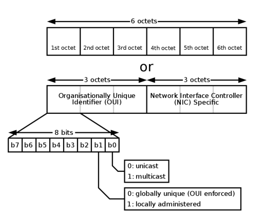
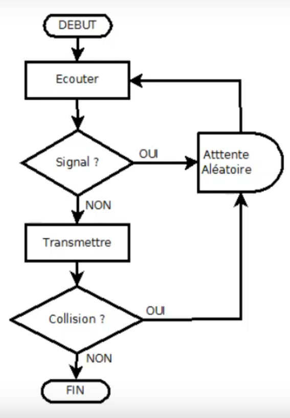
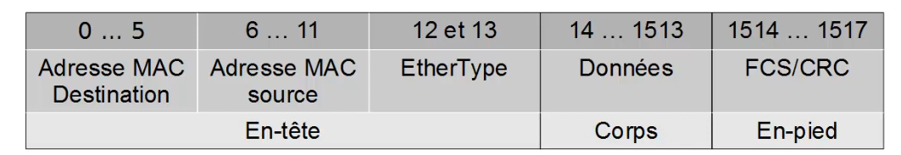

Ethernet
Plan
• Présentation
• Adressage des pairs
• Structure d'une adresse MAC
• Accès au media
• Trames
Présentation
• protocole réseau LAN
◇ implémente la couche 1 (physique) du modèle OSI
▪ sur réseau câblé (paires torsadées, coaxial et fibre optique)
- à bande de base (par opposition aux larges bandes types ADSL)
▪ ne s'applique pas au CPL, qui a ses propres normes
◇ et la couche 2 (liason) du modèle OSI
▪ adresse MAC, etc ...
▪ est généralement classé à ce niveau
• norme IEEE 802.3
◇ a inspiré la norme Wifi (802.11), dans la même famille de normes réseau 802
▪ quasi identique concernat la couche liaison
▪ avec ajout des caractéristiques spécifiques au sans-fil
- identfiant réseau, découverte, association, etc...
Adressage des pairs
• adresse MAC (Media Access Point)
◇ identifiant dit “physique”
▪ stocké sur la carte ou l'interface réseau
◇ sous-couche (dite couche MAC) de la couche liaison
▪ insertion et traitement de l'adresse MAC dans les trames
▪ utilisée par de nombreux protocoles de niveau 2
- Ethernet, bien sûr
- mais aussi WiFi, Bluetooth, ATM, Token Ring, ZigBee ...
• 48bits (6 octets)
◇ généralement représentés sous forme hexadécomale
▪ en séparant les octets par un double point (parfois un tiret)
▪ exemple : 5E:FF:56:A2:AF:15
Structure d'une adresse MAC

• premier octet
◇ bit 1 : bit I/G
▪ 0 = unicast
- paire (également A, C et E)
▪ 1 = multicast ou broadcast
- impaire (également B,D,F)
◇ bit 2 : U/L
▪ 0 = adresse universelle
- conforme au format de l'IEEE
▪ 1 = locale
◇ 22 bits réservés : adresse du constructeur
▪ tout les bits 0 pour une adresse locale
◇ 24 bits : adresse unique
▪ permet de différencier les différentes cartes réseaux d'un même constructeur
Accès au média
• CSMA/CD
◇ Carrier Sense Multiple Access
▪ Accès multiple avec écoute de la porteuse
▪ écoute le média
- pour vérifier qu'aucune autre station ne transmet de données
→ n'émet que dans ce cas
→ mais une latence peu amner malgré tout à des collisions
◇ with Collision Detection
▪ Détection de Collisions
- réémission après un délais aléatoire
• Partage du même média entre deux pairs
◇ aucun jeton ni priorité d'émission

Trames
• PDU de la couche liaison
• EtherType : définition du protocole de couche supérieur utilisé
◇ ex : 0x0800 = Internet Protocl version 4 (IPv4)

Ce qu'on a couvert
• Le protocole liaison (couche 2) le plus courant : Ethernet
◇ adressage physique (MAC)
◇ accès au média
◇ structure de trame